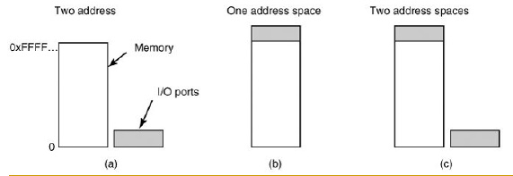
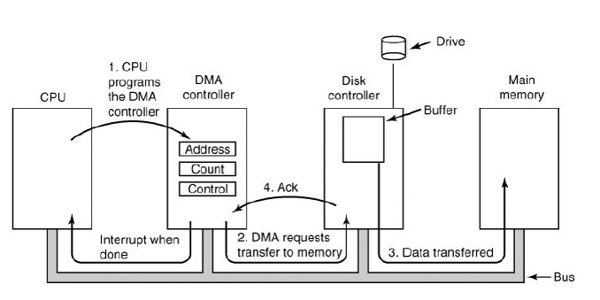
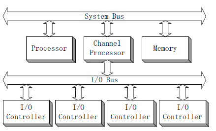

操作系统的主要功能之一是控制所有的输入输出，必须向设备发出指令，捕获中断并进行错误处理，还要提供一个设备与系统其余部分简单的接口。
I/O设备
I/O设备在速度上覆盖了巨大的范围，这给数据传输的性能保持上造成了巨大压力。
按交互对象分类
- 人机交互设备：视频显示设备、键盘、鼠标、打印机
- 与计算机或其他电子设备交互的设备：磁盘、磁带、传感器、控制器
- 计算机间的通信设备：网卡、调制解调器
按交互方向分类
- 输入（可读）：键盘、扫描仪
- 输出（可写）：显示设备、打印机
- 输入/输出（可读写）：磁盘、网卡
按外设特性分类
- 使用特征：存储、输入/输出、终端
- 数据传输率：低速(如键盘)、中速(如打印机)、高速(如网卡、磁盘)
- 信息组织特征：单个字符或数据块
- 字符设备(如打印机、管道)
- 无法编址，也不存在寻址操作
- 块设备(如磁盘)
- 能够独立的读写单个数据块
- 字符设备(如打印机、管道)
设备控制器
I/O设备通常包含一个机械部件和一个电子部件。为了达到设计的模块性和通用性，一般将其分开。电子部分称为设备控制器（device controller）或适配器（adapter）。
操作系统主要和控制器打交道，而不是设备本身。
任务
控制器负责将驱动器读出来的比特流转换成字节块并在需要时进行纠错。
比特流
实际从驱动器读出来的是一串比特流，以一个前导符（preamble）开始，随后是一个扇区4096比特，最后是一个效验和，也称为纠错码（Error-Correcting Code）。
通常该字节块是在控制器中的一个缓冲区中逐个比特汇集而成。在对检查和进行校验证实数据正确之后，该块数据随后被拷贝到主存中。
I/O控制技术
CPU有多种方式控制I/O，其主要的区别在于CPU参与的程度。
内存映射I/O
I/O操作由程序发起，并等待操作完成。数据的每次读写通过CPU。
那么，控制器如何与CPU进行通讯呢？
- 每个控制器都有一些用来与CPU通信的寄存器及数据缓冲区。
- 通过写入寄存器，操作系统可以命令设备发送数据、接收数据、开启或关闭、或其它操作。
- 通常设备有一个数据缓冲区，以供操作系统读写数据。
那么，CPU如何与控制寄存器和设备的数据缓冲区进行通讯呢？
- 每个控制寄存器分配一个I/O port
- 设备寄存器独立编址
- I/O寄存器是内存地址空间的一部分 -- 内存映射I/O
- 设备缓冲区按内存地址空间进行统一编址
如图所示：

示例
当CPU想要读一个字时，无论是从内存中读还是I/O port中读，都将需要的地址放入总线的地址线上，然后在总线的一条控制线上设置读信号。然后用第二条信号线来表明是I/O空间还是内存空间。
读请求 -> CPU(请求地址) -> 总线 -> 内存空间、I/O空间
中断
CPU检测I/O操作是否可以开始或完成：
- 检测设备控制寄存器中的状态标志位（忙等待）
- 使用中断方式通知CPU
中断驱动方式
I/O操作由程序发起，在操作完成时（如数据可读或已经写入）由外设向CPU发出中断，通知该程序。数据的每次读写通过CPU。
当一个启动的中断操作完成时，将中断CPU并开始运行中断处理器。然后将通知操作系统I/O已经完成，操作系统检查状态标志位以确定一切正常，并获取结果。
缺点
- CPU每次处理的数据量少（通常不超过几个字节），只适于数据传输率较低的设备。
- 任何读写操作都需要CPU来复制到内存，过多浪费CPU资源。
直接存储器存取
由程序设置DMA(Direct Memory Access )控制器中的若干寄存器值（如内存始址，传送字节数），然后发起I/O操作，而后者完成内存与外设的成批数据交换，在操作完成时由DMA控制器向CPU发出中断。
在使用DMA中，CPU只需要对DMA编程，然后由DMA来指导控制器将数据从缓存区读到主存。

优点
CPU只需干预I/O操作的开始和结束，而其中的一批数据读写无需CPU控制，适于高速设备。
通道控制方式
通道控制器(Channel Processor)有自己的专用存储器，可以执行由通道指令组成的通道程序，因此可以进行较为复杂的I/O控制。
通道程序通常由操作系统所构造，放在内存里。

优点
- 类似于协处理器
- 执行一个通道程序可以完成几批I/O操作
参考资料
- Operating System:Design and Implementation,Third Edition